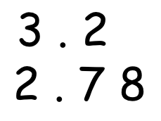
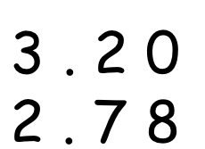
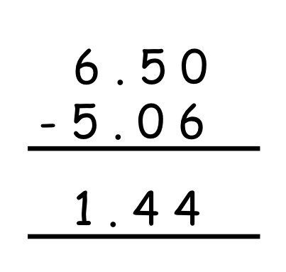

Adding Decimals
When adding decimal numbers, the primary rule is to ensure the numbers are lined up correctly by their decimal points. This alignment ensures that the tenths, hundredths, thousandths, etc., are correctly positioned for addition.
Simple Steps for Adding Decimals:
- Write the Numbers: Arrange the decimals one below the other with the decimal points lined up.
- Make Like Decimals: If the decimals have a different number of digits, add zeros to the ends of some numbers to make them all have the same number of decimal places.
- Add as Whole Numbers: Ignore the decimal point temporarily and add the numbers as if they were whole numbers.
- Place the Decimal Point: In the sum, place the decimal point directly below where it appears in the numbers being added.
Example of Addition:
- Problem: Add 3.2 and 2.78. 
- Step 1 : Align Decimals
- Step 2 : Make like decimals (3.2 will become 3.20) 
- Step 3 : Add as whole numbers
- Step 4 : Place the Decimal point 2 digit before the digits from right.
Subtracting Decimals
Subtracting decimals follows a similar process to addition, with careful alignment of the decimal points being crucial.
Simple Steps for Subtracting Decimals:
- Align the Decimal Points: Write the numbers vertically so that the decimal points are in a straight line.
- Make Like Decimals: Pad the numbers with fewer decimal places with zeros at the end to match the number of decimal places in the number with the most decimal places.
- Subtract as Whole Numbers: Temporarily ignore the decimal points and subtract the numbers as if they were whole numbers.
- Place the Decimal Point: In the difference, place the decimal point in line with the decimal points of the numbers.
Example of Subtraction:
- Problem: Subtract 5.06 from 6.5.
- Step 1 : Align Decimals
- Step 2 : Make like decimals (6.5 will become 6.50)
- Step 3 : Subtract as whole numbers
- Step 4 : Place the decimal point two places to the left of the rightmost digit, aligning with the position of the decimal in the numbers used. 
Real-Life Applications of Addition and Subtraction of Decimals
Understanding how to add and subtract decimals is not just a mathematical skill confined to the classroom; it has numerous practical applications in everyday life. Being proficient in these operations can help you manage personal finances, cook accurately, engage in construction projects, and participate in scientific experiments where precision is paramount.